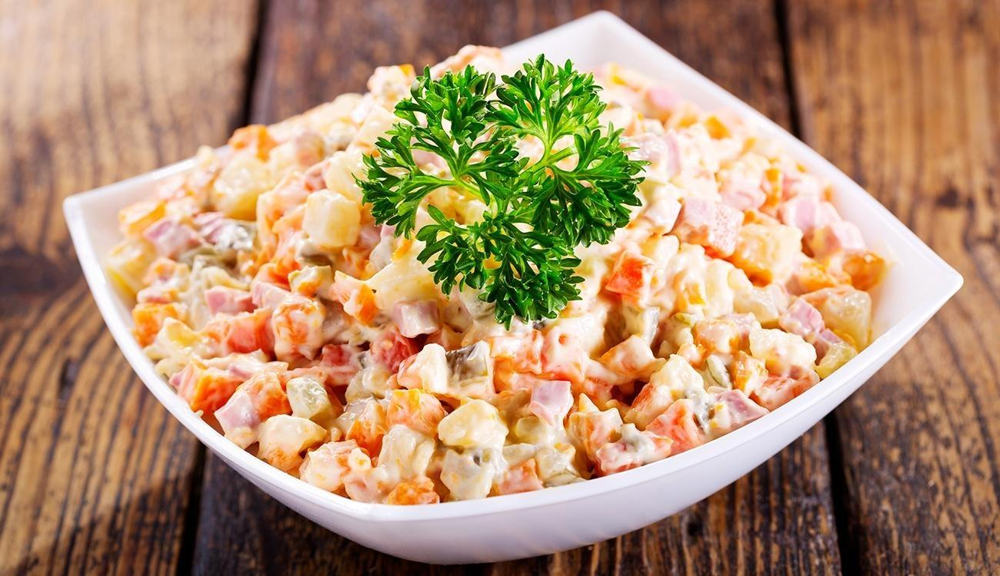

Salada de maionese is a Brazilian salad that's traditionally served with churrasco barbecue. It's also known as Gaúcho potato salad since it was invented by Gaúchos, Brazilian cowboys. The salad is made with a combination of potatoes, carrots, peas, corn on the cob, thinly sliced green apples, raisins, and mayonnaise.
Meal prep time : 38 minutes
Servings : 8